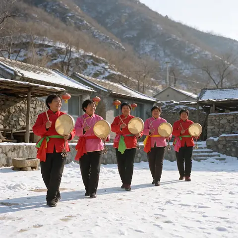
本馆《太守行纪》剧集
筹备中
传承人
筹备中
项目档案库
144 项、356 子项
（本页配图如无特别标注，均为 AI 生成的示意图，非实拍。）
第 1 / 3 页（III-1 至 III-60）
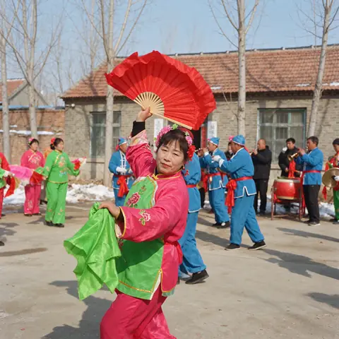
III-217 项子项目秧歌
河北省 · 辽宁省 · 山东省 等 8 地
展开档案明细17 条
- 秧歌（昌黎地秧歌）河北省昌黎县2006 第一批 · 新增项目官方页 →
- 秧歌（抚顺地秧歌）辽宁省抚顺市2006 第一批 · 新增项目官方页 →
- 秧歌（鼓子秧歌）山东省商河县2006 第一批 · 新增项目官方页 →
- 秧歌（胶州秧歌）山东省胶州市2006 第一批 · 新增项目官方页 →
- 秧歌（海阳大秧歌）山东省海阳市2006 第一批 · 新增项目官方页 →
- 秧歌（陕北秧歌）陕西省绥德县2006 第一批 · 新增项目官方页 →
- 秧歌（济阳鼓子秧歌）山东省济阳县2008 第二批 · 扩展项目官方页 →
- 秧歌（临县伞头秧歌）山西省临县2008 第二批 · 扩展项目官方页 →
- 秧歌（原平凤秧歌）山西省原平市2008 第二批 · 扩展项目官方页 →
- 秧歌（汾阳地秧歌）山西省汾阳市2008 第二批 · 扩展项目官方页 →
- 秧歌（小红门地秧歌）北京市朝阳区2011 第三批 · 扩展项目官方页 →
- 秧歌（乐亭地秧歌）河北省乐亭县2011 第三批 · 扩展项目官方页 →
- 秧歌（阳信鼓子秧歌）山东省阳信县2011 第三批 · 扩展项目官方页 →
- 秧歌（延庆旱船）北京市延庆县2014 第四批 · 扩展项目官方页 →
- 秧歌（西码头百忍京秧歌高跷）天津市红桥区2021 第五批 · 扩展项目官方页 →
- 秧歌（滦州地秧歌）河北省唐山市滦州市2021 第五批 · 扩展项目官方页 →
- 秧歌（乌拉满族秧歌）吉林省吉林市2021 第五批 · 扩展项目官方页 →
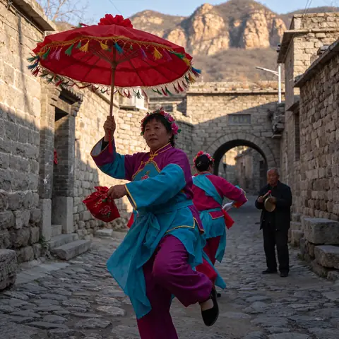
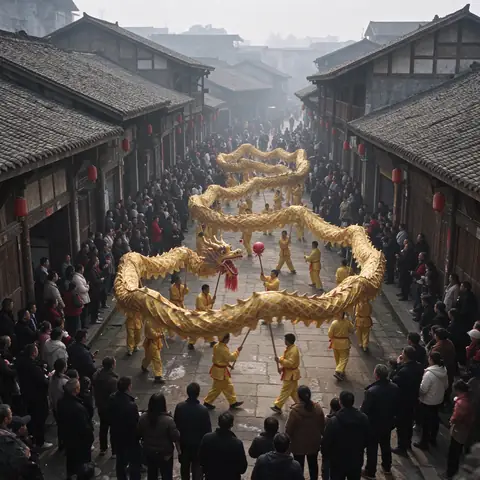
III-443 项子项目龙舞
重庆市 · 广东省 · 浙江省 等 14 地
展开档案明细43 条
- 龙舞（铜梁龙舞）重庆市2006 第一批 · 新增项目官方页 →
- 龙舞（湛江人龙舞）广东省湛江市2006 第一批 · 新增项目官方页 →
- 龙舞（汕尾滚地金龙）广东省汕尾市2006 第一批 · 新增项目官方页 →
- 龙舞（浦江板凳龙）浙江省浦江县2006 第一批 · 新增项目官方页 →
- 龙舞（长兴百叶龙）浙江省长兴县2006 第一批 · 新增项目官方页 →
- 龙舞（奉化布龙）浙江省奉化市2006 第一批 · 新增项目官方页 →
- 龙舞（泸州雨坛彩龙）四川省泸县2006 第一批 · 新增项目官方页 →
- 龙舞（易县摆字龙灯）河北省易县2008 第二批 · 扩展项目官方页 →
- 龙舞（曲周龙灯）河北省曲周县2008 第二批 · 扩展项目官方页 →
- 龙舞（金州龙舞）辽宁省大连市金州区2008 第二批 · 扩展项目官方页 →
- 龙舞（舞草龙）上海市松江区2008 第二批 · 扩展项目官方页 →
- 龙舞（骆山大龙）江苏省溧水区2008 第二批 · 扩展项目官方页 →
- 龙舞（兰溪断头龙）浙江省兰溪市2008 第二批 · 扩展项目官方页 →
- 龙舞（大田板灯龙）福建省大田县2008 第二批 · 扩展项目官方页 →
- 龙舞（高龙）湖北省武汉市汉阳区2008 第二批 · 扩展项目官方页 →
- 龙舞（汝城香火龙）湖南省汝城县2008 第二批 · 扩展项目官方页 →
- 龙舞（九龙舞）湖南省平江县2008 第二批 · 扩展项目官方页 →
- 龙舞（埔寨火龙）广东省丰顺县2008 第二批 · 扩展项目官方页 →
- 龙舞（人龙舞）广东省佛山市2008 第二批 · 扩展项目官方页 →
- 龙舞（荷塘纱龙）广东省江门市蓬江区2008 第二批 · 扩展项目官方页 →
- 龙舞（乔林烟花火龙）广东省揭阳市2008 第二批 · 扩展项目官方页 →
- 龙舞（醉龙）广东省中山市2008 第二批 · 扩展项目官方页 →
- 龙舞（黄龙溪火龙灯舞）四川省双流县2008 第二批 · 扩展项目官方页 →
- 龙舞（浦东绕龙灯）上海市浦东新区2011 第三批 · 扩展项目官方页 →
- 龙舞（直溪巨龙）江苏省金坛市2011 第三批 · 扩展项目官方页 →
- 龙舞（碇步龙）浙江省泰顺县2011 第三批 · 扩展项目官方页 →
- 龙舞（开化香火草龙）浙江省开化县2011 第三批 · 扩展项目官方页 →
- 龙舞（坎门花龙）浙江省玉环县2011 第三批 · 扩展项目官方页 →
- 龙舞（龙灯扛阁）山东省临沂市2011 第三批 · 扩展项目官方页 →
- 龙舞（火龙舞）河南省孟州市2011 第三批 · 扩展项目官方页 →
- 龙舞（三节龙）湖北省云梦县2011 第三批 · 扩展项目官方页 →
- 龙舞（地龙灯）湖北省来凤县2011 第三批 · 扩展项目官方页 →
- 龙舞（芷江孽龙）湖南省芷江侗族自治县2011 第三批 · 扩展项目官方页 →
- 龙舞（城步吊龙）湖南省城步苗族自治县2011 第三批 · 扩展项目官方页 →
- 龙舞（香火龙）广东省南雄市2011 第三批 · 扩展项目官方页 →
- 龙舞（六坊云龙舞）广东省中山市2011 第三批 · 扩展项目官方页 →
- 龙舞（鳌江划大龙）浙江省平阳县2014 第四批 · 扩展项目官方页 →
- 龙舞（手龙舞）安徽省绩溪县2014 第四批 · 扩展项目官方页 →
- 龙舞（潜江草把龙）湖北省潜江市2014 第四批 · 扩展项目官方页 →
- 龙舞（徽州板凳龙）安徽省黄山市休宁县2021 第五批 · 扩展项目官方页 →
- 龙舞（王贵武龙灯）湖北省黄石市铁山区2021 第五批 · 扩展项目官方页 →
- 龙舞（板板龙灯）湖南省张家界市慈利县2021 第五批 · 扩展项目官方页 →
- 龙舞（安仁板凳龙）四川省达州市2021 第五批 · 扩展项目官方页 →
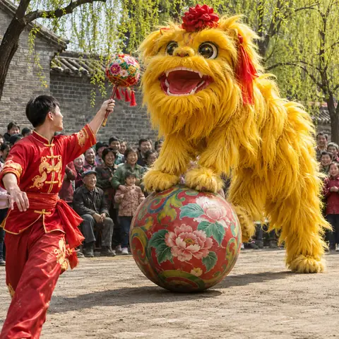
III-523 项子项目狮舞
河北省 · 山西省 · 浙江省 等 11 地
展开档案明细23 条
- 狮舞（徐水舞狮）河北省徐水县2006 第一批 · 新增项目官方页 →
- 狮舞（天塔狮舞）山西省襄汾县2006 第一批 · 新增项目官方页 →
- 狮舞（黄沙狮子）浙江省临海市2006 第一批 · 新增项目官方页 →
- 狮舞（广东醒狮）广东省佛山市2006 第一批 · 新增项目官方页 →
- 狮舞（广东醒狮）广东省遂溪县2006 第一批 · 新增项目官方页 →
- 狮舞（广东醒狮）广东省广州市2006 第一批 · 新增项目官方页 →
- 狮舞（白纸坊太狮）北京市2008 第二批 · 扩展项目官方页 →
- 狮舞（沧县狮舞）河北省沧县2008 第二批 · 扩展项目官方页 →
- 狮舞（丰城岳家狮）江西省丰城市2008 第二批 · 扩展项目官方页 →
- 狮舞（小相狮舞）河南省巩义市2008 第二批 · 扩展项目官方页 →
- 狮舞（槐店文狮子）河南省沈丘县2008 第二批 · 扩展项目官方页 →
- 狮舞（席狮舞）广东省梅州市2008 第二批 · 扩展项目官方页 →
- 狮舞（布依族高台狮灯舞）贵州省兴义市2008 第二批 · 扩展项目官方页 →
- 狮舞（马桥手狮舞）上海市闵行区2011 第三批 · 扩展项目官方页 →
- 狮舞（古陂蓆狮、犁狮）江西省信丰县2011 第三批 · 扩展项目官方页 →
- 狮舞（青狮）广东省揭阳市2011 第三批 · 扩展项目官方页 →
- 狮舞（松岗七星狮舞）广东省深圳市2011 第三批 · 扩展项目官方页 →
- 狮舞（藤县狮舞）广西壮族自治区藤县2011 第三批 · 扩展项目官方页 →
- 狮舞（田阳壮族狮舞）广西壮族自治区田阳县2011 第三批 · 扩展项目官方页 →
- 狮舞（高台狮舞）重庆市彭水苗族土家族自治县2011 第三批 · 扩展项目官方页 →
- 狮舞（黎川舞白狮）江西省黎川县2014 第四批 · 扩展项目官方页 →
- 狮舞（上川黄连胜醒狮舞）广东省深圳市宝安区2021 第五批 · 扩展项目官方页 →
- 狮舞（瑶族布袋木狮舞）广东省清远市连州市2021 第五批 · 扩展项目官方页 →
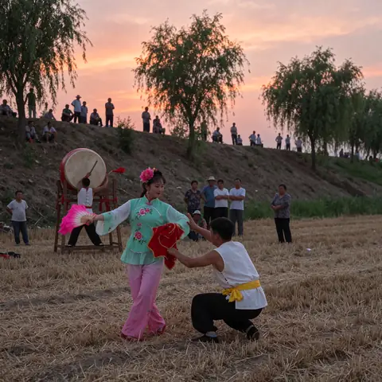
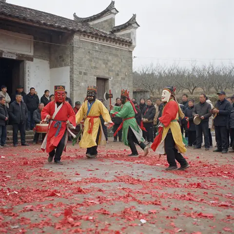
III-712 项子项目傩舞
江西省 · 山西省 · 安徽省 等 6 地
展开档案明细12 条
- 傩舞（南丰跳傩）江西省南丰县2006 第一批 · 新增项目官方页 →
- 傩舞（婺源傩舞）江西省婺源县2006 第一批 · 新增项目官方页 →
- 傩舞（乐安傩舞 ）江西省乐安县2006 第一批 · 新增项目官方页 →
- 傩舞（寿阳爱社）山西省寿阳县2008 第二批 · 扩展项目官方页 →
- 傩舞（祁门傩舞）安徽省祁门县2008 第二批 · 扩展项目官方页 →
- 傩舞（邵武傩舞）福建省邵武市2008 第二批 · 扩展项目官方页 →
- 傩舞（湛江傩舞）广东省湛江市麻章区2008 第二批 · 扩展项目官方页 →
- 傩舞（文县池哥昼）甘肃省文县2008 第二批 · 扩展项目官方页 →
- 傩舞（永靖七月跳会）甘肃省永靖县2008 第二批 · 扩展项目官方页 →
- 傩舞（浦南古傩）福建省漳州市2011 第三批 · 扩展项目官方页 →
- 傩舞（跳五猖）安徽省郎溪县2014 第四批 · 扩展项目官方页 →
- 傩舞（萍乡耍傩神）江西省萍乡市2021 第五批 · 扩展项目官方页 →
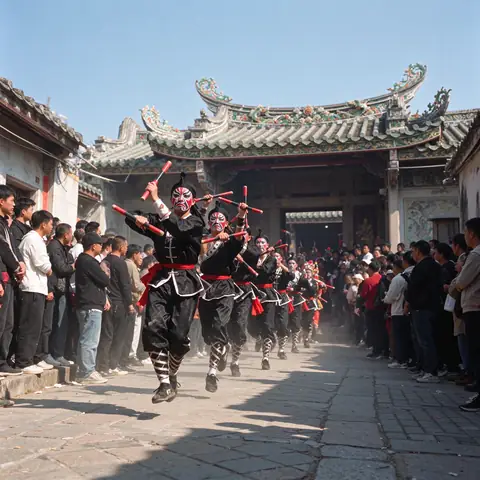
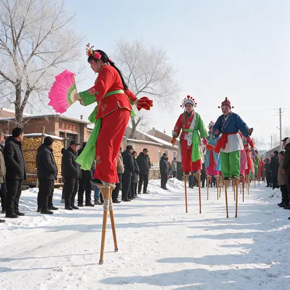
III-98 项子项目高跷
山西省 · 辽宁省 · 甘肃省 等 5 地
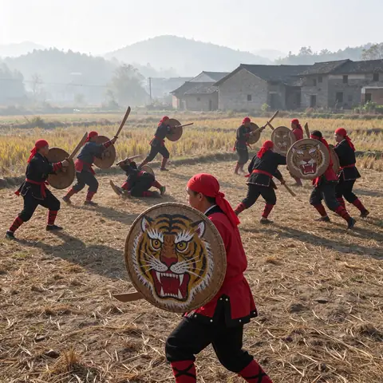
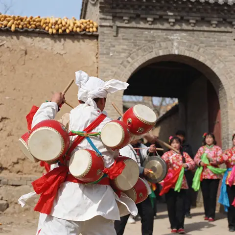
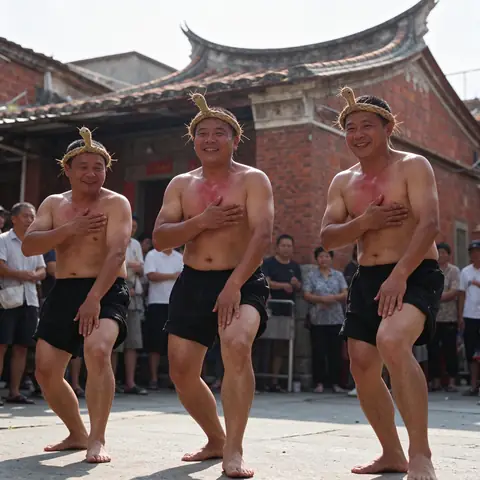
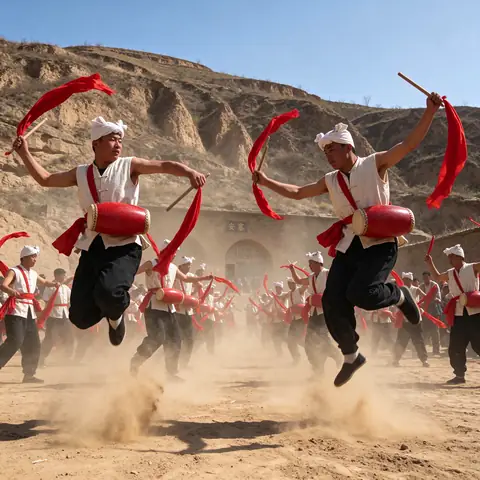
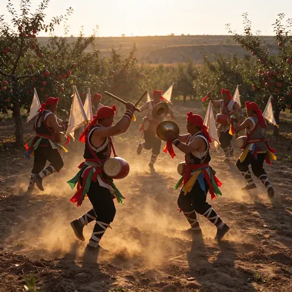
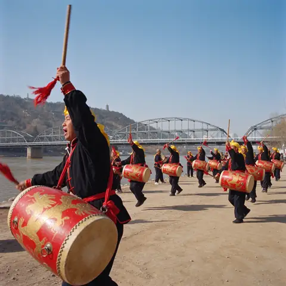
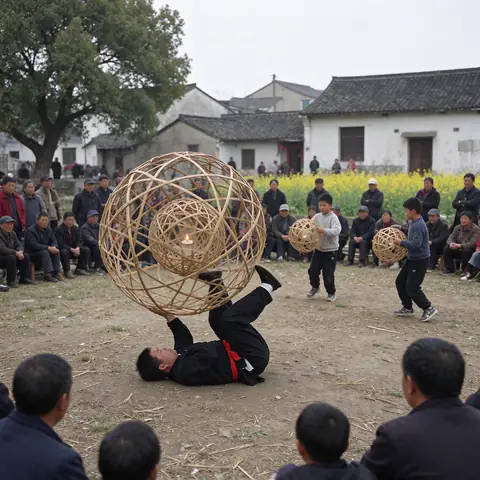
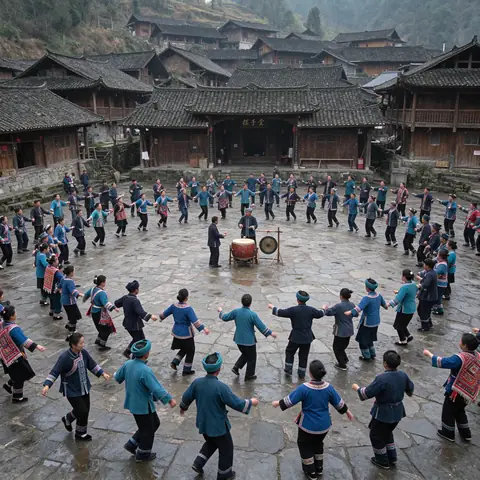
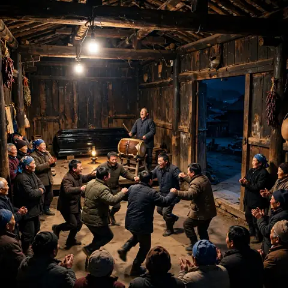
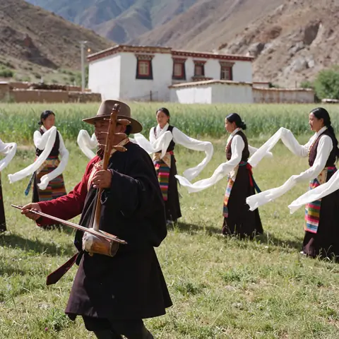
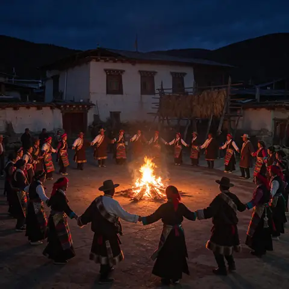
III-2011 项子项目锅庄舞
云南省 · 西藏自治区 · 青海省 等 5 地
展开档案明细11 条
- 锅庄舞（迪庆锅庄舞）云南省迪庆藏族自治州2006 第一批 · 新增项目官方页 →
- 锅庄舞（昌都锅庄舞）西藏自治区2006 第一批 · 新增项目官方页 →
- 锅庄舞（玉树卓舞）青海省玉树藏族自治州2006 第一批 · 新增项目官方页 →
- 锅庄舞（甘孜锅庄）四川省石渠县2008 第二批 · 扩展项目官方页 →
- 锅庄舞（甘孜锅庄）四川省雅江县2008 第二批 · 扩展项目官方页 →
- 锅庄舞（甘孜锅庄）四川省新龙县2008 第二批 · 扩展项目官方页 →
- 锅庄舞（甘孜锅庄）四川省德格县2008 第二批 · 扩展项目官方页 →
- 锅庄舞（马奈锅庄）四川省金川县2008 第二批 · 扩展项目官方页 →
- 锅庄舞（称多白龙卓舞）青海省称多县2008 第二批 · 扩展项目官方页 →
- 锅庄舞（囊谦卓干玛）青海省囊谦县2008 第二批 · 扩展项目官方页 →
- 锅庄舞（甘南锅庄舞）甘肃省甘南藏族自治州2021 第五批 · 扩展项目官方页 →
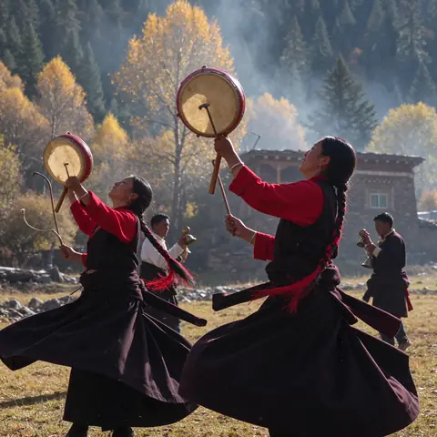
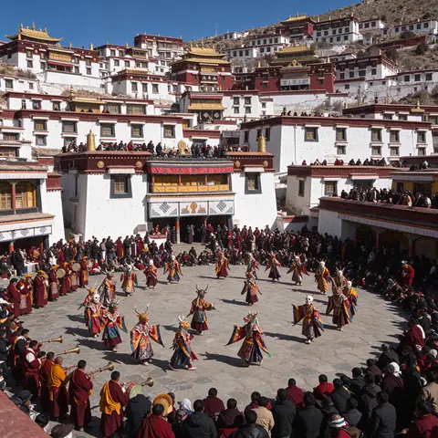
III-228 项子项目羌姆
西藏自治区
展开档案明细8 条
- 日喀则扎什伦布寺羌姆西藏自治区2006 第一批 · 新增项目官方页 →
- 羌姆（拉康加羌姆）西藏自治区洛扎县2011 第三批 · 扩展项目官方页 →
- 羌姆（直孔嘎尔羌姆）西藏自治区墨竹工卡县2011 第三批 · 扩展项目官方页 →
- 羌姆（曲德寺阿羌姆）西藏自治区贡嘎县2011 第三批 · 扩展项目官方页 →
- 羌姆（桑耶寺羌姆）西藏自治区扎囊县2014 第四批 · 扩展项目官方页 →
- 羌姆（门巴族拔羌姆）西藏自治区错那县2014 第四批 · 扩展项目官方页 →
- 羌姆（江洛德庆曲林寺尼姑羌姆）西藏自治区日喀则市2014 第四批 · 扩展项目官方页 →
- 羌姆（林芝米纳羌姆）西藏自治区林芝县2014 第四批 · 扩展项目官方页 →
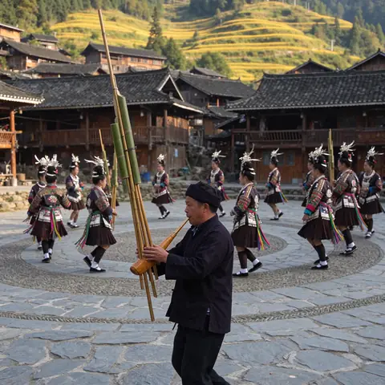
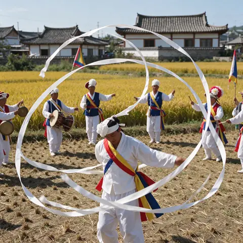
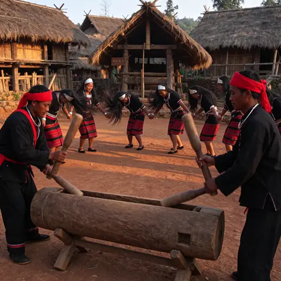
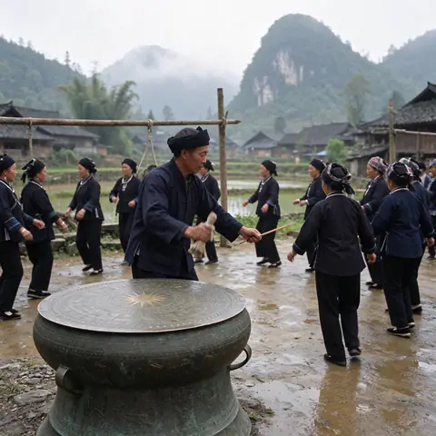
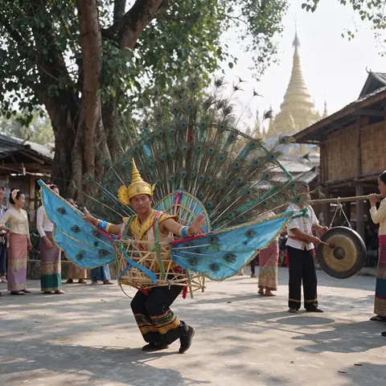
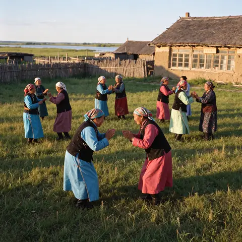
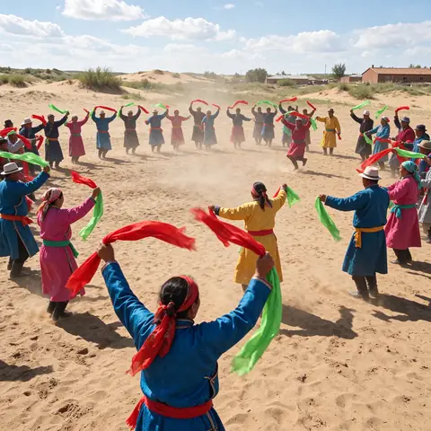
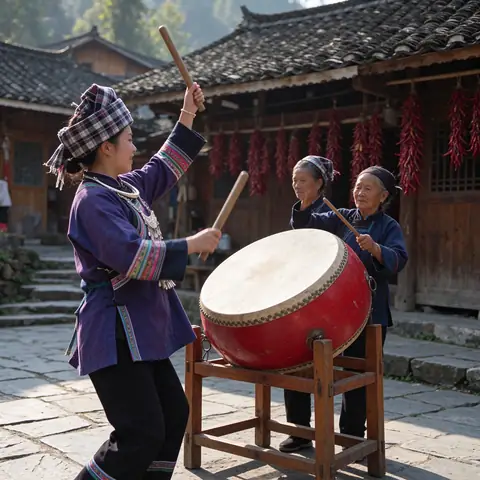
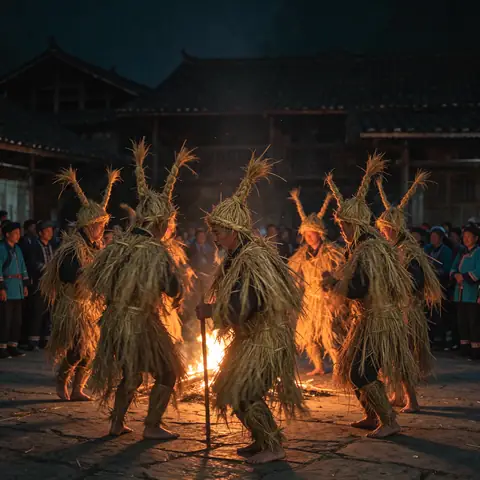
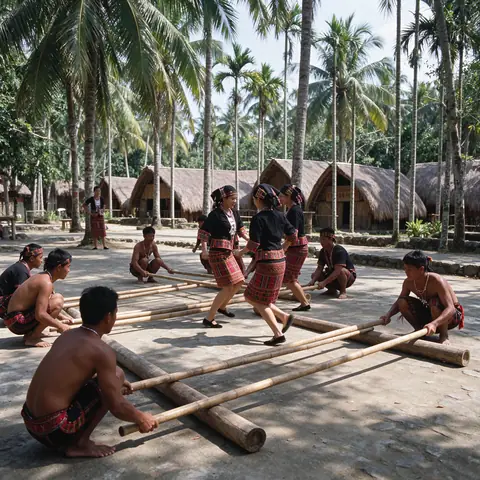
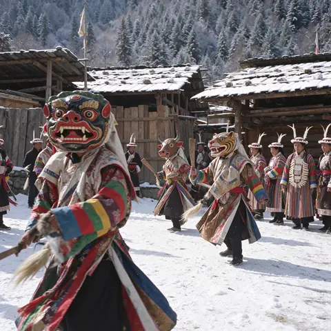
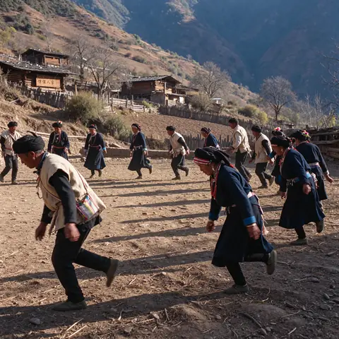
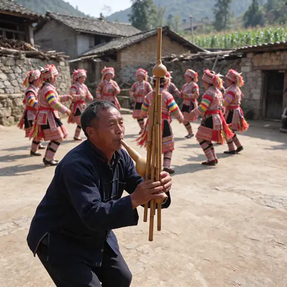
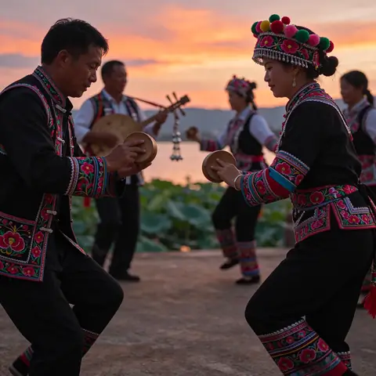
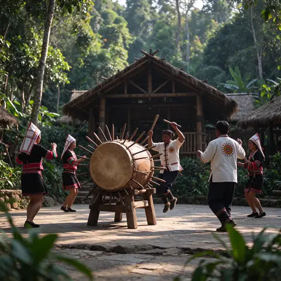
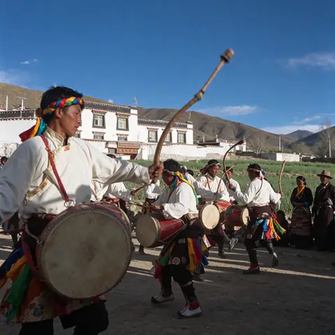
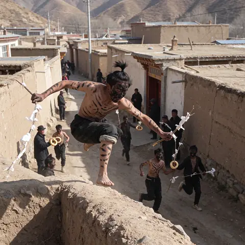
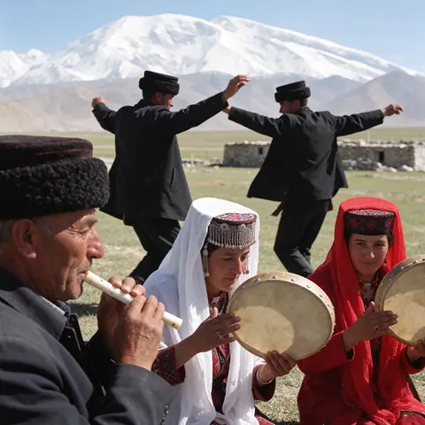
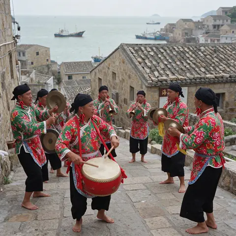
III-4219 项子项目鼓舞
北京市 · 河北省 · 山西省 等 10 地
展开档案明细19 条
- 鼓舞（花钹大鼓）北京市昌平区2008 第二批 · 新增项目官方页 →
- 鼓舞（隆尧招子鼓）河北省隆尧县2008 第二批 · 新增项目官方页 →
- 鼓舞（平定武迓鼓）山西省平定县2008 第二批 · 新增项目官方页 →
- 鼓舞（大奏鼓）浙江省温岭市2008 第二批 · 新增项目官方页 →
- 鼓舞（陈官短穗花鼓）山东省广饶县2008 第二批 · 新增项目官方页 →
- 鼓舞（柳林花鼓）山东省冠县2008 第二批 · 新增项目官方页 →
- 鼓舞（花鞭鼓舞）山东省商河县2008 第二批 · 新增项目官方页 →
- 鼓舞（八卦鼓舞）山东省栖霞市2008 第二批 · 新增项目官方页 →
- 鼓舞（横山老腰鼓）陕西省横山县2008 第二批 · 新增项目官方页 →
- 鼓舞（宜川胸鼓）陕西省宜川县2008 第二批 · 新增项目官方页 →
- 鼓舞（凉州攻鼓子）甘肃省武威市2008 第二批 · 新增项目官方页 →
- 鼓舞（武山旋鼓舞）甘肃省武山县2008 第二批 · 新增项目官方页 →
- 鼓舞（万荣花鼓）山西省万荣县2011 第三批 · 扩展项目官方页 →
- 鼓舞（土沃老花鼓）山西省沁水县2011 第三批 · 扩展项目官方页 →
- 鼓舞（稷山高台花鼓）山西省稷山县2011 第三批 · 扩展项目官方页 →
- 鼓舞（乌拉陈汉军旗单鼓舞）吉林省吉林市2011 第三批 · 扩展项目官方页 →
- 鼓舞（辽西太平鼓）辽宁省葫芦岛市2021 第五批 · 扩展项目官方页 →
- 鼓舞（四筒鼓舞）云南省昭通市昭阳区2021 第五批 · 扩展项目官方页 →
- 鼓舞（彝族花鼓舞）云南省玉溪市峨山彝族自治县2021 第五批 · 扩展项目官方页 →
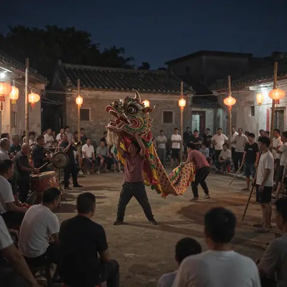
III-439 项子项目麒麟舞
河北省 · 河南省 · 广东省 等 5 地
展开档案明细9 条
- 河北省黄骅市2008 第二批 · 新增项目官方页 →
- 河南省兰考县2008 第二批 · 新增项目官方页 →
- 广东省海丰县2008 第二批 · 新增项目官方页 →
- 麒麟舞（麒麟采八宝）山西省侯马市2011 第三批 · 扩展项目官方页 →
- 麒麟舞（睢县麒麟舞）河南省睢县2011 第三批 · 扩展项目官方页 →
- 麒麟舞（坂田永胜堂舞麒麟）广东省深圳市2011 第三批 · 扩展项目官方页 →
- 麒麟舞（大船坑舞麒麟）广东省深圳市2011 第三批 · 扩展项目官方页 →
- 麒麟舞（樟木头舞麒麟）广东省东莞市2011 第三批 · 扩展项目官方页 →
- 麒麟舞（西贡坑口客家舞麒麟）香港特别行政区2014 第四批 · 扩展项目官方页 →
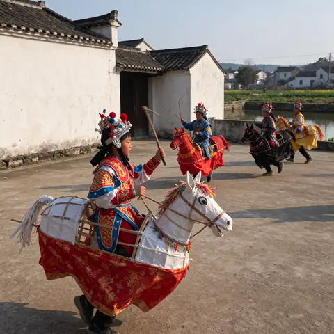
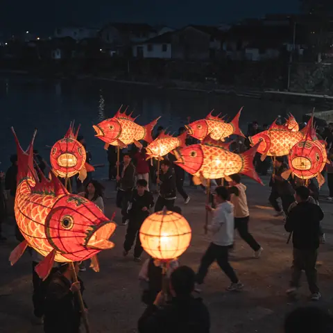
III-4512 项子项目灯舞
浙江省 · 安徽省 · 福建省 等 7 地
展开档案明细12 条
- 灯舞（青田鱼灯舞）浙江省青田县2008 第二批 · 新增项目官方页 →
- 灯舞（东至花灯舞）安徽省东至县2008 第二批 · 新增项目官方页 →
- 灯舞（莆田九鲤灯舞）福建省莆田市2008 第二批 · 新增项目官方页 →
- 灯舞（鲤鱼灯舞）江西省吉安县2008 第二批 · 新增项目官方页 →
- 灯舞（苏家作龙凤灯舞）河南省博爱县2008 第二批 · 新增项目官方页 →
- 灯舞（沙头角鱼灯舞）广东省深圳市2008 第二批 · 新增项目官方页 →
- 灯舞（无为鱼灯）安徽省无为县2011 第三批 · 扩展项目官方页 →
- 灯舞（上舍化龙灯）浙江省安吉县2014 第四批 · 扩展项目官方页 →
- 灯舞（青田百鸟灯舞）浙江省青田县2014 第四批 · 扩展项目官方页 →
- 灯舞（郧阳凤凰灯舞）湖北省十堰市郧阳区2014 第四批 · 扩展项目官方页 →
- 灯舞（吉水鳌鱼灯）江西省吉安市吉水县2021 第五批 · 扩展项目官方页 →
- 灯舞（五虾闹鲇）湖北省荆州市2021 第五批 · 扩展项目官方页 →
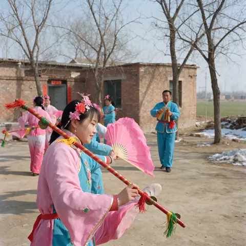
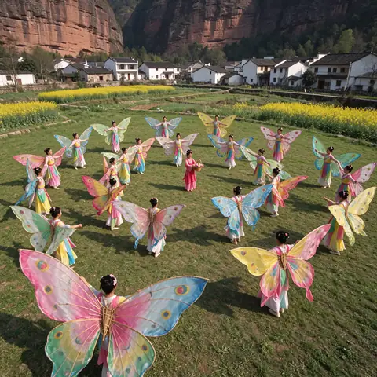
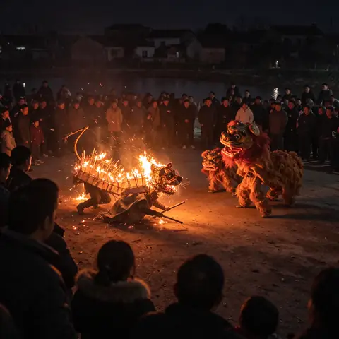
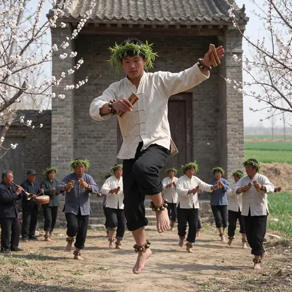
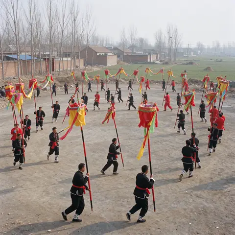
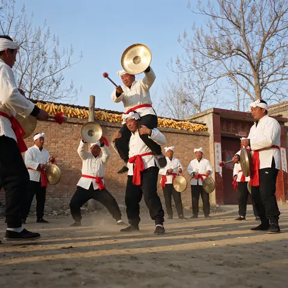
名录数据来源：中国非物质文化遗产网